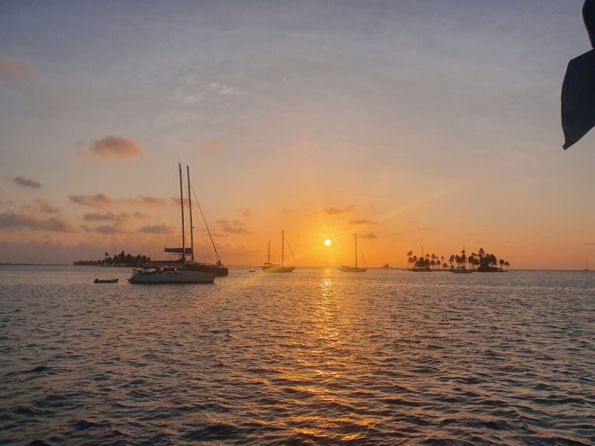
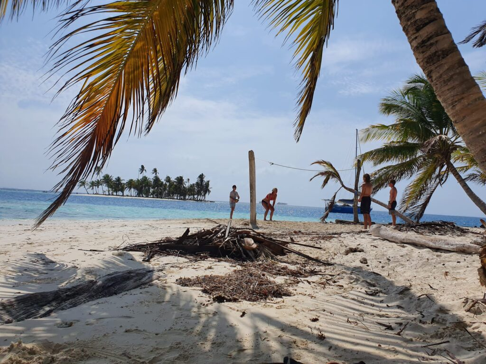

Een unieke ervaring en een werelddeel later is de tijd ineens daar. Verwelkom mij, Europa, zoals je nog nooit hebt gedaan.
De dag van vertrek is aanstaande. Voor het eerst in mijn leven ben ik zes dagen op zee. In een prachtige zeilboot verzamelen elf toeristen zich bij een haai van een kapitein, die vertrouwen uitstraalt, maar ons ook angst inboezemt met het mogelijk druistige weer. Hij wordt bijgestaan door een secundant en chef, die de hele dag kookt voor de totaal niet hongerige zieltjes. Zij zullen zich de komende dagen ontpoppen van een mengelmoesje tot een hechte groep vol persoonlijkheden. Een Engelse meid met een schrille stem krijgt een kleur als een boei en klampt zich vast aan mijn maatje uit Münster. Een Australisch-Iers stel overtuigt me dat mij volgende reis naar Melbourne moet zijn. Een Haarlemse biertbatser rookt ketting in een hoekje van de boeg en een verliefd Braziliaans stel versmelt in de zitzakken op het dek. Een Duitse familie met een indrukwekkende dynamiek adopteert me nadat ik met de zoon, die me regelmatig een loef afsteekt, een broederlijke band ontwikkel. Gelukkig klikt het fantastisch; we zitten immers met elkaar opgescheept. En de kapitein maar doorvaren.

Klotsbak
De eerste twee nachten op open zee raad ik niemand aan. Stoned van de pillen lig ik de hele dag op het dek te verbranden, geobserdeerd door mijn boek en elk gesprek vermijdend. Iedereen brengt zijn tijd op de hoge golven in stilte door, zonder een hap naar binnen de krijgen. We vragen ons af waarom we aan lagerwal zijn geraakt voor deze trip en of we de bakens niet moeten verzetten. Hebben we bakzeil gehaald door geen andere koers te varen? Ik moet alle zeilen bijzetten om de moed erin te houden. Sommigen, inclusief het boegbeeld van een kapitein, komen er met wat kotsessies bekaaid vanaf en raken overstuur. We zitten niet allemaal in hetzelfde schuitje; gelukkig mis ik qua onrust de boot. De beste stuurlui staan aan wal, maar in een rechte lijn stevenen we richting eerste bestemming: zonder averij aangekomen in behouden haven. Voor ons geen zee te hoog, maar het was kantje boord.
Ik ga voor anker en na een wiebelige nacht ga ik bij het zien van het paradijs meteen overstag. Ik steek mijn hoofd uit de kajuit om te zien waar we verzeild zijn geraakt en zie enkel palmbomen en witte zandstranden: de vlag dekt de lading. De plaatjes zijn niet te bezeilen zo mooi en vanaf nu zijn er geen kinken in de kabel meer. Ik zit op het droge, maar heb ook niks nodig. Mijn eerdere zorgen raken nu kant nog wal en ik gooi het roer om naar ontspanningsmodus. Geen reden om te schipperen, iedereen is recht door zee en goedlachs. De sfeer loopt de spuigaten uit als de rum rijkelijk vloeit en de dagen snel omslaan. Onder de kracht van de zon steekt iedereen steekt van wal over het leven, mijn favoriete onderwerp. Wie negatief is, kan de wind van voren krijgen.

Ja, Panama
Als we van eiland wisselen, zweeft een eenzame Jonathan met ons mee terwijl de vliegende vissen bij tijd en wijlen op het dek belanden. Onder water is het koraal bijna dood, maar zwaardvissen, haaien, dolfijnen, roggen en meer tropische vissen verhullen zich amper. Hoe onbewoond de volgende plek ook is, ook hier is het nodige plastic (en crocs?) aangespoeld. De dagen vullen zich met volleyballen, muziek, lezen en lachen tot de week ineens om is. We belanden in Panama City voor een laatste avondmaal en inmiddels zo gewend geraakt aan de bewegende golven, deinst de hotelkamer nog mee op het ritme van de zee.
Nog een paar dagen surfen dan om het af te leren. Weer moederziel alleen pak ik een shuttle naar playa Venao. Droog heuvellandschap, verrassend goede wegen, verrassend veel file. In het hostel vol Israëliers die na hun verplichte legerjaar op reis zijn, klinken de hele dag schuurmachines; zoals bijna overal wordt er verbouwd. Het strand is perfect en de golven nog beter. Ik shred de hele dag want de sociale batterij is leeg, al weet ik waar de stekker ligt. Het eindigt met een zalige sessie bij zonsopgang in een privézee, op wat knabbelende vliegende vissen na.
De droom is verwezenlijkt, de reis waar ik al jaren naar uitkeek is voltooid. Een ongelooflijk avontuur, maar ik wil niet vervallen in clichés.
Dit was het.